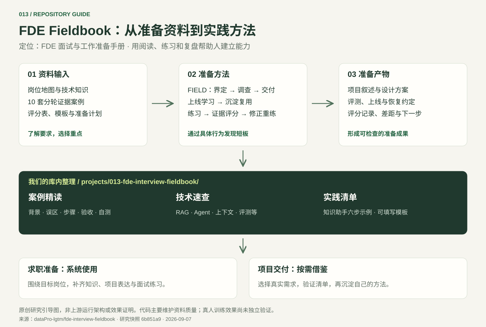

{kind=link}
岗位认知与定位
了解 FDE 的职责，以及 AI / Agent、数据平台、受监管部署等方向；对照岗位描述识别准备重点。
查看准备路径 ↓面向 FDE 的面试与工作准备资料库。这里进一步提炼 10 套案例中的处理步骤、技术概念和验收证据，让我们先理解做法，再按具体需求深入。
本体是什么面试与工作准备手册
如何发挥作用阅读、练习、评分、改进
我们如何看待按需参考的知识与方法资产
这是一张内容与使用方式的引导图。点击可放大查看，适合先了解整体关系，再进入具体案例。

原创研究引导图，非上游运行架构或效果证明。下载矢量图 ↓
这里的“能力”，主要指资料帮助人建立的能力。仓库中的脚本用于内容维护与检查，不直接提供 AI 应用服务。
了解 FDE 的职责，以及 AI / Agent、数据平台、受监管部署等方向；对照岗位描述识别准备重点。
查看准备路径 ↓覆盖需求发现、编码、数据、系统设计与生产 AI；建立能解释技术取舍的知识框架。
阅读技术要点 ↓10 套场景案例，分开候选人和主持人资料，逐轮提供证据，观察提问、决策与调整。
阅读十套案例 ↓八个能力维度、四档行为标准。用实际回答和产物解释分数，找出下一次要改的行为。
查看实践与验收 ↓7、14、30 天路径，把阅读转成有完成标准的练习；整理简历、项目经历与岗位匹配证据。
选择使用路径 ↓提供需求、最小交付、评测上线、事故与交接模板。可结合具体项目参考和调整。
打开实践清单 ↓FIELD 是贯穿材料的思考顺序。点击每一步，看看它在一个“客服知识助手”示例中意味着什么。
例：客服查找退款政策耗时较长。先明确谁使用、当前耗时、希望改善的结果，以及谁负责验收。
示例为本页用于解释方法的概括，不是上游系统的运行演示。
评分关注具体行为。目标是发现决策中的缺口，形成可复查的产物。
点击案例即可在本页阅读背景、误区、处理顺序、技术解释和验收证据。内容概括自上游教育案例；“对我们的用途”为研究建议。
显示 10 个案例
同一笔退款在下游已执行，但网关未及时返回。另一个实例再次发起调用，生成了不同的调用 ID，造成重复退款。
每次重试生成一个新随机 ID，或只在 Agent 内存里记录“已执行”，都无法约束下游业务副作用。
适用于我们以后让助手发消息、提交工单、改权限或删除数据。
模拟并发、超时和响应丢失，同一业务动作仍只有一次结果；未知状态可以被查询和收敛。
工具执行契约：操作 ID、授权、状态查询、去重、审计和人工处理入口。
不够。先判断结果是否可查询，并复用同一个业务操作 ID；无法确认结果时进入对账或人工处理。
读完应能回答：什么时候用、先做什么、如何检查。写工具幂等、知识生命周期与任务恢复的细节见上方案例。
检索增强生成：先查资料，再让模型依据资料回答。
源数据 → 解析与版本 → 切块和索引 → 权限过滤 → 召回与排序 → 上下文 → 生成与引用
源文档缺失或版本错误，通常无法靠换一个更强模型补救。
工作流由代码决定步骤；Agent 根据中间观察选择下一步，两者可以组合。
固定控制流程 → 局部模型判断 → 参数校验 → 有限工具执行 → 检查完成条件
增加多个 Agent 并不自动提升质量；只有上下文、权限、工具或任务边界不同才值得拆分。
上下文包含指令、资料、工具、历史和状态；Skill 用来组织可复用步骤、参考和检查。
任务识别 → 加载相关方法 → 获取当前证据 → 执行 → 检查产物
把所有资料写进一个巨大的提示词，容易带来冲突和噪声；权限仍需系统强制。
MCP 连接工具与资源；A2A 支持独立 Agent 之间交换任务与结果。这里仅概括用途，不追述具体规范版本。
身份确认 → 能力与输入契约 → 有限授权 → 任务或工具调用 → 状态与产物验证
协议解决连接形式，业务幂等、结果正确性和恢复机制仍由应用负责。
评测检查预期结果；观测记录运行时发生了什么。二者通过请求与版本关联。
固定样本 + 固定版本 → 运行 → 分组比较 → 定位偏离 → 修复 → 回归
总体平均分会掩盖少量严重错误；保存全部原文也可能引入新的信息暴露。
总耗时包括排队、检索、生成、工具和后处理；成本还包括重试与人工复核。
记录各段耗时 → 找主因 → 减少多余调用 → 缩短上下文 → 按需缓存或并行 → 重测
只看模型单次价格，会漏掉长上下文、多次重试和工具执行的总成本。
内容依据：上游生产 AI 章节 ↗。本页解释为概括整理，具体产品能力与协议版本需在实施时确认。
下面是我们的示例练习，不是上游项目的实测结果。先填出答案和证据，再考虑增加功能。
例如：客服查找有效退款政策。记录当前查找耗时、常见失败和谁负责验收。
产物：一页目标与范围，不用“完成系统”代替业务结果。先选一个知识范围，登记来源、版本、负责人和用户权限，明确撤回与删除生效时间。
产物：数据与权限表；对应“知识同步”案例。输入问题 → 查授权资料 → 给出引用建议 → 人工确认。若没有动态决策需求，先用固定工作流。
产物：端到端样例和可追踪记录；对应 RAG 与工作流技术卡。有答案、无答案、政策过期、跨权限、重复操作、断线恢复。每类注明预期结果；未启用写工具时，检查其不可调用。
产物：小型评测集；样本量与阈值按实际风险另定。先让一小组真实用户试用。引用正确、任务有改善后再扩大；出现越权或错误动作时停止并回退。
产物：试点范围、结果记录和恢复责任人。换一个知识域，观察哪些检索、权限、评测规则仍成立。将共同部分提为模板，保留领域差异。
产物：可复用部分与定制边界；对应“连接器产品化”案例。以下为本页整理的阅读建议。正式训练日程与完成标准，请以原仓库的学习路径为准。
适合暂时没有 FDE 求职目标，只想判断这套资料是否值得收藏的人。
下面是我们的研究判断。价值取决于是否有相关岗位准备或企业项目交付需求。
准备 FDE 或相近岗位时，可以系统使用；做企业 AI 项目时，挑选需求、验收、事故和交接模板参考。
当前采用方式：在我们的库中保存案例笔记与实践清单；遇到知识接入、工具写入或长任务需求时，直接从对应案例开始验证。
节省寻找资料和设计训练计划的时间。通过案例与评分表识别自身短板。
参考问题定义、验收标准、失败恢复与责任人清单；结合实际流程调整。
它不提供可直接集成的 RAG、Agent 或业务服务。新增运行功能需要另行开发。
研究快照版本为 1.0.0-rc.1。上游发布审计记录：独立学员训练、独立案例主持、独立评分校准、双语独立使用四项门禁均为 not-run。本次研究阅读了资料与检查脚本，未重跑上游完整验收，也未组织真人试用。
Markdown 承载说明，JSON 登记案例、路径和来源，Python 与 GitHub Actions 检查内容契约、链接、时效及发布一致性。评分汇总脚本统计评审分歧，不是自动理解回答的 AI 面试官。
本页建议：先开展真人试用，再补充自己的行业案例、实际项目模板或可运行故障实验。AI 模拟教练、自动辅助评分、团队训练平台都属于未来可开发方向，不是仓库现有能力，也不是本次交付范围。
上游采用 MIT 许可证，资料不代表所提及公司的官方面试流程。练习结果不能冒充真实项目经历；本页未验证其对录用率或生产交付效果的提升。
网页用于快速理解，库内笔记保存可扩展的内容。后续具体实现和验证记录继续放在本子项目维护。
0907_codex_project / projects / 013-fde-interview-fieldbook /README.md：定位与研究结论
notes/practice-guide.md：十套案例、六组技术与来源
notes/project-checklist.md：可填写的项目清单
demo/index.html：本页源码
网页与笔记在本子项目统一维护，可访问仓库或下载笔记继续扩展。
选一个对应需求 → 记录自己的数据与约束 → 补可运行样例 → 注入一个故障 → 留下验收证据。我们先优先保留 RAG 排查、知识更新、写工具幂等与任务恢复四类方法。
内容按研究快照整理；下列入口固定到研究提交，便于追溯。仓库首页可查看后续更新。